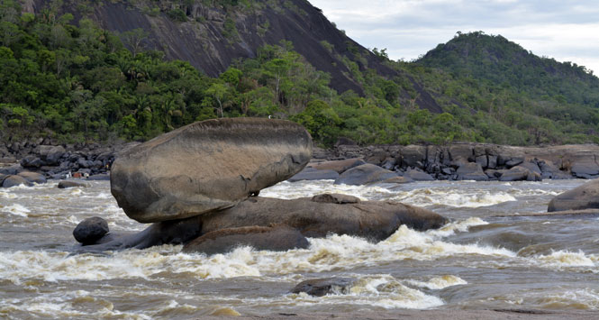
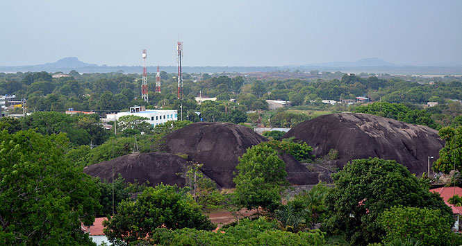
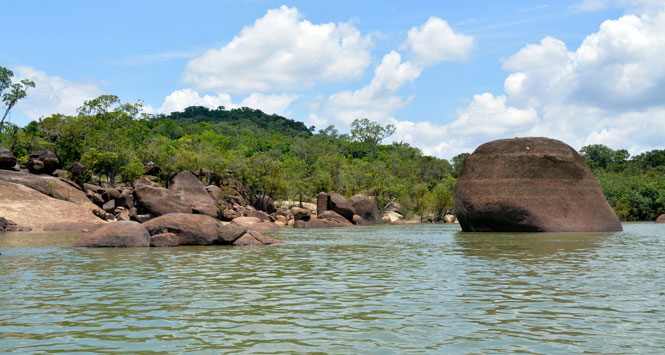

Río Tuparro
Puerto Carreño
Casuarito
Maipures
Descripcion: El Tuparro hace parte principalmente del municipio de Cumaribo, aunque también se puede acceder desde la capital Puerto Carreño en un recorrido de al menos 4 horas que incluye el paso por Cazuarito hasta Garcitas donde se aborda una lancha hasta uno de los centros de visitantes del parque. También se puede llegar por tierra desde Cumaribo, el municipio más grande de Colombia, en la ruta Villavicencio - Gaviotas - Tapón - Centro Administrativo con una duración de 24 horas. Otra opción es por vía aérea, ya que el lugar cuenta con pistas de aterrizaje para aviones pequeños.
  